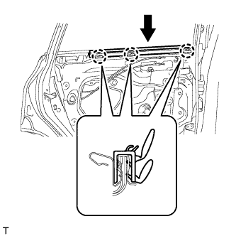
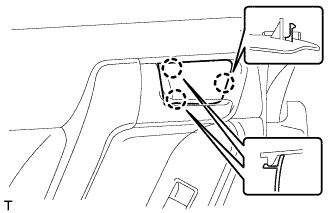

ДИНАМИК ЗАДНЕЙ ДВЕРИ > УСТАНОВКА |
| 1. УСТАНОВИТЕ ЗАДНИЙ ДИНАМИК № 2 В СБОРЕ (для моделей с 14 динамиками) |
 |
Совместите динамик с установочными штырями двери А.
Установите задний динамик № 2 и закрепите его 2 винтами.
| 2. УСТАНОВИТЕ ЗАДНИЙ ДИНАМИК |
 |
Временно установите динамик, введя в зацепление 2 захвата динамика с панелью двери.
Установите задний динамик и закрепите его 3 винтами в порядке, показанном на рисунке.
Подсоедините разъем.
| 3. УСТАНОВИТЕ ВНУТРЕННИЙ УПЛОТНИТЕЛЬ СТЕКЛА ЛЕВОЙ ЗАДНЕЙ ДВЕРИ |
|  |
Введите в зацепление 3 захвата, чтобы установить внутренний уплотнитель стекла задней двери, как показано на рисунке.
| 4. УСТАНОВИТЕ ПАНЕЛЬ ОБЛИЦОВКИ ЗАДНЕЙ ДВЕРИ В СБОРЕ |
 |
Установите зажим на дверную панель.
Подсоедините трос дистанционного управления замком задней двери в сборе и внутренний трос замка задней двери в сборе.
Подсоедините все разъемы.
 |
Закрепите панель облицовки задней двери с помощью 4 захватов на внутреннем уплотнителе стекла задней двери, как показано на рисунке.
Введите в зацепление 9 фиксаторов и установите панель облицовки задней двери в сборе.
Вверните 3 винта.
| 5. УСТАНОВИТЕ ЛЕВУЮ НАКЛАДКУ ВЕРХНЕГО ПОРУЧНЯ |
 |
Введите в зацепление 8 захватов и установите облицовку верхнего поручня.
| 6. УСТАНОВИТЕ ДЕРЖАТЕЛЬ ВНУТРЕННЕЙ РУЧКИ ЛЕВОЙ ДВЕРИ № 2 |
|  |
Введите в зацепление 3 захвата, чтобы установить оправу внутренней ручки задней двери.
| 7. ПОДСОЕДИНИТЕ ПРОВОД К ОТРИЦАТЕЛЬНОМУ ВЫВОДУ АККУМУЛЯТОРНОЙ БАТАРЕИ |